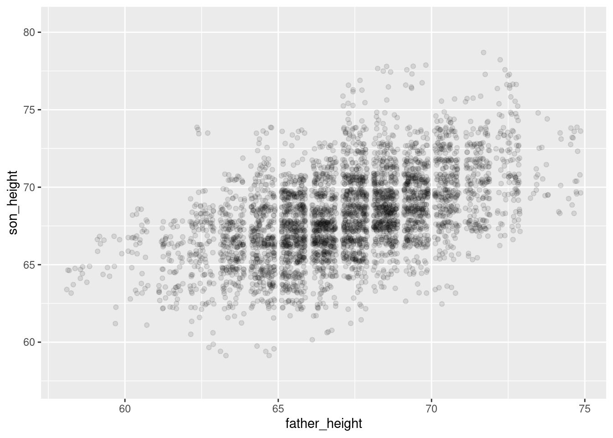
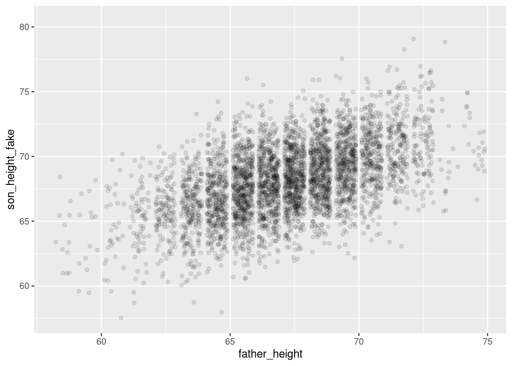

library(ggplot2)Simulating data from a model in R
What’s in this tutorial?
This tutorial explains how to simulate “fake but realistic” data from a linear model in R. This includes how to extract the residual standard error from the model, which is necessary for simulating the right level of variability in the data.
The tutorial also demonstrates how to create parallel plots of real and simulated data, so you can visually assess how “realistic” the fake data is, which in turns can help you understand how well your model is fitting.
I recommend going through the Code Tutorial on residuals as well as the Unit 4 reading before going through this tutorial.
Loading data and packages
Load ggplot2
We will use the ggplot2 package for visualizing residuals.
Load the Pearson & Lee (1903) data
Use the code here to read in a subset of the data from Pearson & Lee (1903), which is a classic data set of the heights of fathers and their sons collected in a survey. This data is derived from the PearsonLee data set found in the HistData package, and more details can be found in the documentation for that package.
I’m naming the variable “pl” to stand for Pearson & Lee.
pl <- read.csv("FatherSonHeights.csv")
head(pl) observation father_height son_height
1 1 62.5 59.5
2 2 62.5 59.5
3 3 63.5 59.5
4 4 63.5 59.5
5 5 64.5 59.5
6 6 64.5 59.5This data should have 4,312 rows and three variables, though the observation variable is just an arbitrary number matching the row number.
The father_height and son_height variables are expressed as inches. All of the measurements were rounded to the nearest inch but then recorded on the “half-inch”. In other words, there are values 62.5, 63.5, 64.5, and so on, but no values 62.0, or any value between the XX.5 values.
This means we will frequently use “jitter” when we create scatterplots. See the Code Tutorial on scatterplots for details on jitter and other techniques for handling overplotting.
Why simulate data?
One of the best ways to understand your model and think about whether it’s a “good” model is to use the model to generate “fake” data, and then compare the fake data to the real data. If the patterns look pretty similar, then your model is probably on the right track. But sometimes they will look really different, and that may help you think about how to change your model to improve it, or how you might need to be cautious in interpreting your model.
What do you mean “fake data”?
There are some different ways to go about this. I am going to explain one of the easier versions, because it makes direct visual comparisons a little easier, which is the point described above.
Again, the reasoning here is described in more detail in the Unit 4 reading, but the basic idea is that we want to use model predictions plus variability to randomly generate plausible values of the \(y\) (response) values for the \(x\) (predictor) values. If we just generate model predictions, we will get a straight line (in a linear model), and obviously our real data doesn’t usually look like a simple straight line. So what we need to add is the right level of variability (aka error) to these predictions, in order to generate fake data that looks more like real data.
In short, if we can use our model to generate fake data that looks like it could be real, our model is pretty good! But we need both model predictions and variability to do this.
Generating fake \(y\) values
Essentially what we are doing is taking model predictions and adding variability. We’ll explain this in two steps.
Getting model predictions
We reviewed this in the Code Tutorial on residuals already, but it’s very simple. There are two ways to do the same thing in R. Both require us to fit the model first. We are again fitting a simple model of using the heights of fathers (\(x\) variable) to predict the heights of their sons (\(y\) variable). With the fitted model object, we can use either the predict() function or we can extract the predictions (which are also called “fitted values”) from the model directly. These get the same results.
height_model <- lm(son_height ~ 1 + father_height, data = pl)
son_height_predictions <- predict(height_model)
son_height_predictions_v2 <- height_model$fitted.valuesAdding variability
In order to add variability, we need to consider the assumptions of the model. For a standard linear model, we assume that the error component of the model is normally distributed. This means all we really need to do is to generate random numbers from a normal distribution, and add those to our model predictions. Easy!
Well, almost easy. We need to make sure we’re pulling from the correct normal distribution. Recall (from Unit 2) that a normal distribution has two parameters, a mean and a standard deviation. The mean is easy, because our model assumes that errors have a mean of zero (discussion of why this is must be true is in the Unit 4 reading. But how do we get the standard deviation?
The standard deviation of the error component goes by a few different names. One is the “residual standard error” (or residual standard deviation). The idea is that for every data point, there is some remaining variation that is not being “explained” by the model predictorsk, but this is randomly different for each data point.
Fortunately, getting this in R is easy, and we don’t need to go through all the various math here.
First, the summary() function applied to a model object gives a very useful printed output:
summary(height_model)
Call:
lm(formula = son_height ~ 1 + father_height, data = pl)
Residuals:
Min 1Q Median 3Q Max
-7.3762 -1.7029 -0.2606 1.6238 8.6623
Coefficients:
Estimate Std. Error t value Pr(>|t|)
(Intercept) 33.2681 0.8874 37.49 <2e-16 ***
father_height 0.5193 0.0132 39.35 <2e-16 ***
---
Signif. codes: 0 '***' 0.001 '**' 0.01 '*' 0.05 '.' 0.1 ' ' 1
Residual standard error: 2.357 on 4310 degrees of freedom
Multiple R-squared: 0.2643, Adjusted R-squared: 0.2642
F-statistic: 1549 on 1 and 4310 DF, p-value: < 2.2e-16And as you can see, it even lists the residual standard error! But how can we pull that value out without manually typing it?
It turns out that what you see when you use summary() is just the print() method of the summary, which is actually a special object called a summary.lm object. And as I described in more detail in the Code Tutorial on residuals, most complex objects in R are like lists that you can pull apart. So we can save the summary itself as its own object and examine the names of its parts:
model_summary <- summary(height_model)
names(model_summary) [1] "call" "terms" "residuals" "coefficients"
[5] "aliased" "sigma" "df" "r.squared"
[9] "adj.r.squared" "fstatistic" "cov.unscaled" Here, what we want is the sigma value. This is where the residual standard error that we see printed out is actually stored. You can see this by comparing the value below to what is printed out above. I’ll go ahead and save this value as a variable called model_error that we can use later.
model_error <- model_summary$sigma
model_error[1] 2.356939As you can see, there is some rounding in the printed output, so again, it’s better to extract this value directly instead of manually copying it from the summary print-out.
Putting it together: predictions plus variability
So now that we have the residual standard error, we can use this as the standard deviation for our random normally-distributed errors. By adding these errors/residuals to the individual prediction values, we get our “fake but realistic” data. We will create a new column in our data frame to represent these fake numbers so that we can examine and visualize them easily. Recall that our \(y\) variable in the model is son_height, which is the thing we are predicting. So because we are creating simulated heights of sons, I’ll call the new column son_height_sim:
n_obs <- nrow(pl)
pl$son_height_fake <-
predict(height_model) +
rnorm(n_obs, mean = 0, sd = model_error)I’ve used some line returns here to try to make it easier to see the two steps. We generate the predicted values from the model (i.e., the values on the line) and add random numbers. We need to tell R how many random numbers we need, and I separated that out to make it easier to read, making an n_obs (for “number of observations”) variable that is just the number of rows (observations) in our data frame.
So we say that we need n_obs random normal numbers, with a mean of zero and a standard deviation that is the “residual standard error” from our model.
That’s it! We have now used the information in our model to create completely new “fake” values for our \(y\) variable, which here is the height of sons.
Visualizing and comparing simulated data
The whole reason to do this is so that we can compare how the fake data looks compared to our real data. If they look similar, then we can feel better that our model is doing a pretty good job. But what exactly do we mean by “look similar”?
Here, we can just compare two scatterplots: one with the real data for both \(x\) and \(y\) vs. a scatterplot with the simulated \(y\) on the y-axis, along with the real \(x\) values. Because ggplot alters the axis range depending on the data, we need to make sure that we’re plotting the same axes for both. We can do this by setting the limits of the y-axis as follows. I’ll use the range of the original variable, and add a little “padding” to make sure we don’t accidentally crop some points. R actually warns you if you “lose” data from the plot, so we can fiddle with the exact values until we don’t get that warning. (And again, we’re jittering because of overplotting.)
real_plot <- ggplot(pl, aes(father_height, son_height)) +
geom_jitter(alpha = 0.1) +
scale_y_continuous(limits = range(pl$son_height) + c(-2, 2))
simulation_plot <- ggplot(pl, aes(father_height, son_height_fake)) +
geom_jitter(alpha = 0.1) +
scale_y_continuous(limits = range(pl$son_height) + c(-2, 2))
real_plot
simulation_plotWarning: Removed 2 rows containing missing values or values outside the scale range
(`geom_point()`).
And overall they look pretty similar! The simulated plot looks a little more “clean” and the real plot looks a little “hairier” for lack of a more precise term. But overall, if you flip back and forth between these plots, they look extremely similar. This is good news for our model!
Summary
Simulating “fake but realistic” data from a model is a very useful tool. One of the uses is to compare how simulated data compares to real data, when trying to understand what a model is doing well and where it might be having problems. The example here is what a “good” model looks like, but the Practice and Challenge will explore an example of a “bad” model as well.
With linear models, simulating data is relatively simple, because it’s just adding random variation on top of the linear predictions. R makes it easy to extract the standard deviation of the random variation – called the “residual standard error” – from the model summary object. This gives us what we need to create the right level of “noisiness” around the predicted values from our model in order to create a simulated data set that resembles the original data.